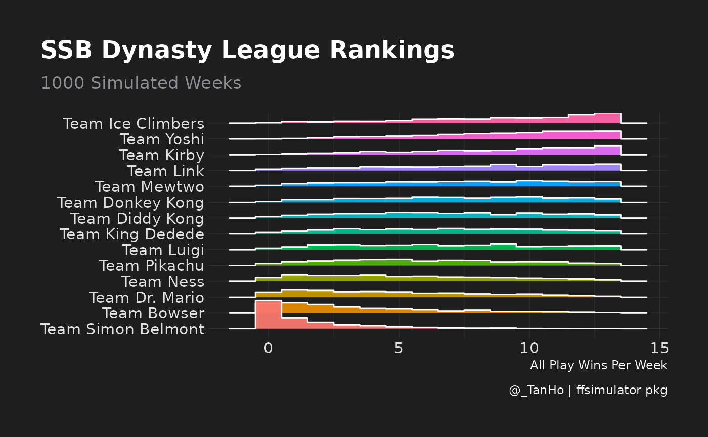

library(ffsimulator)
library(ffscrapr)
library(dplyr)
library(forcats)
library(purrr)
library(tidyr)
library(ggplot2)
pkgload::load_all()
library(hrbrthemes)
library(ggridges)
library(tictoc)
hrbrthemes::import_plex_sans()
conn <- mfl_connect(2021, 54040)
scoring_history <- ffscrapr::ff_scoringhistory(conn, 2016:2020)
adp_outcomes <- .ff_adp_outcomes(scoring_history = scoring_history,
injury_model = "simple")
latest_rankings <- .ff_latest_rankings()
rosters <- ffscrapr::ff_rosters(conn)
lineup_constraints <- ffscrapr::ff_starter_positions(conn)
n_weeks <- 1000
projected_score <- rosters %>%
dplyr::left_join(
ffscrapr::dp_playerids() %>% dplyr::select("mfl_id","fantasypros_id"),
by = c("player_id"="mfl_id")
) %>%
dplyr::left_join(
latest_rankings %>% dplyr::select("fantasypros_id", "ecr"),
by = c("fantasypros_id")
) %>%
dplyr::filter(!is.na(ecr)) %>%
dplyr::group_by(pos) %>%
dplyr::mutate(rank = round(ecr)) %>%
dplyr::ungroup() %>%
dplyr::left_join(
adp_outcomes %>% dplyr::select("pos", "rank", "prob_gp", "week_outcomes"),
by = c("pos","rank")
) %>%
dplyr::select(
"franchise_id",
"franchise_name",
"player_id",
# "fantasypros_id",
"player_name",
"pos",
"team",
"age",
"ecr",
"rank",
"prob_gp",
"week_outcomes"
) %>%
dplyr::mutate(
projection = purrr::map_if(week_outcomes,
Negate(is.null),
~sample(.x, size = n_weeks, replace = TRUE)),
injury_model = purrr::map_if(prob_gp,
Negate(is.null),
~rbinom(n = n_weeks, size = 1, prob = .x)),
n = purrr::map(n_weeks,seq_len),
prob_gp = NULL,
week_outcomes = NULL,
pos = factor(pos, levels = c("QB","RB","WR","TE"))
) %>%
tidyr::unnest(c(projection,injury_model,n)) %>%
dplyr::arrange(n, franchise_id, pos, ecr) %>%
mutate(
proj_score = projection * injury_model
)
tictoc::tic()
optimal_scores <- projected_score %>%
group_by(franchise_id, franchise_name, n) %>%
nest() %>%
ungroup() %>%
mutate(
optimals = map(data, ffsimulator::.ff_optimize_lineups, lineup_constraints)
) %>%
unnest_wider(optimals)
tictoc::toc()
#> 18.806 sec elapsed
optimal_scores <- optimal_scores %>%
select(-data,-optimal_lineup) %>%
group_by(n) %>%
mutate(all_play_wins = rank(optimal_score)-1) %>%
ungroup()
optimal_scores %>%
group_by(franchise_name) %>%
mutate(mean_ap = mean(all_play_wins)) %>%
ungroup() %>%
mutate(franchise_name = fct_reorder(franchise_name, mean_ap)) %>%
ggplot(aes(x = all_play_wins, y = franchise_name, fill = franchise_name)) +
geom_density_ridges(
color = "white",
stat = "binline",
alpha = 0.95,
binwidth = 1
# quantile_lines = TRUE
) +
theme_modern_rc(base_family = "IBM Plex Sans") +
theme(
plot.title.position = "plot",
legend.position = "none"
) +
xlab("All Play Wins Per Week") +
ylab(NULL) +
labs(
title = "SSB Dynasty League Rankings",
subtitle = "1000 Simulated Weeks",
caption = "@_TanHo | ffsimulator pkg"
)